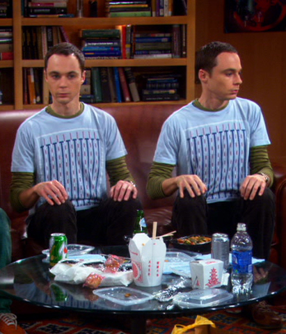

Introduction to Go
Kevin W. Gisi
Twin Cities Code Camp 8—April 10, 2010
Summary
Go is a brand-spanking-new systems language that Google released in November, 2009. Every wonder how awesome C would be if it was garbage-collected, concurrent, and didn't take a few weeks to compile? Wake up; it's here! We'll take a look at this new language that steals some of the dynamic flexibility of Python and Ruby, the performance of C, and a compile time that you'll miss if you blink.
Hello, world
package main import "fmt" func main() { fmt.Printf("Hello, world\n") }
code/hello_world.go
Why Go?
- It's a systems language
- It's fun, like dynamic languages
We Already Have a Systems Language!
Like C
void primes(int m, int t, int c) { ((t / m) <= 1) ? primes(m,t+1,c) : !(t % m) ? primes(m,t+1, t % m) : ((t % m)==(t / m) && !c) ? (printf("%d\t",(t / m)), primes(m,t+1,c)) : ((t % m)> 1 && (t % m) < (t / m)) ? primes(m,t+1,c + !((t / m) % (t % m))) : (t < m * m) ? primes(m,t+1,c) : 0; }
code/c.c
We Already Have Fun Languages!
module Kernel def method_missing(cmd,*args) args.empty? ? cmd.to_s : "#{cmd} #{args.join(" ")}" end end puts this is terrible code x = [1,2,3] eval(x.join('+'))
code/ruby.rb
Fun Languages are Slow at Runtime

Fast Languages are Slow to Compile

Alternative: Go
Go is slow at runtime AND at compile time!
- 1/2—1/3 LOC for C++ benchmarks
- 1—1/16 of the speed (libraries?)
Priorities:
- Compile time
- Performance
- Readability
It Runs on Linux
It Runs on OS X!

It Runs on Virtual Machines!
Specifications
- Compiled
- Imperative, structured
- Concurrent
- Strongly typed (explicit or inferred)
Variables & Types
- int, float
- int8, int32, float64
- uint, ufloat
- string
- struct
Variables: Pointers and Arrays
Pointers
- Use them for reference
- DON'T manipulate them!
Arrays
var arrayOfInt [10]int
code/variables.go
Variables: Slices and Maps
Slices
- "Pointers" for arrays
- Contains pointers to each object in a range of the array
- Used for passing array values by reference
Maps
var m map = map[string] int{} m["price"] = 5
code/variables.go
Variable Declaration
// Declare a variable var s string = ""; // Go infers the type var s2 = ""; // Syntactic shorthand - initializing declaration s3 := "";
code/variables.go
Variable Allocation
new()
- allocates heap space
- zero-initializes the space
- returns the address
make()
- allocates heap space
- creates the object (and underlying data structure)
- returns the value
Go ≠ C
- Semicolons optional (implied)
- Curly braces MUST start on the same line
- No parentheses in
ifs andfors - Garbage collected
- Arrays aren't pointers
Methods
- CamelCase - public
- camelCase - package-level
- Pass by value
- Multiple return values
What? Multiple Return Values?!
func gimmeFive() (int, string) { return 5, "thanks for asking!" }
code/methods.go
How do we access them?
x, message := gimmeFive()
code/methods.go
Why Multiple Return Values?
if text, err := readFile('foo.txt'); err == nil { // Read the file } else { // Handle the error } for key, value := range my_map { } // ...or for _, value := range my_map { // Discard the first returned value }
code/methods.go
Named Results
func gimmeSix() (value int, err string) { // value and err are set to nil value = 5 return // implicitly returns 5, nil }
code/methods.go
Concurrency

Goroutines
- NOT threads
- Independent code
- Communication over shared memory
Threads
- Exist
- Span across multiple cores
- Go load-balances them
- Don't worry about it
Goroutine Example
go gimmeFive() go func() { time.Sleep(5) fmt.Println("Computer over. Virus = very yes") }()
code/concurrency.go
- No access to spawned goroutines
- No thread.join equivalent
Channels
- Like Unix pipes
- Communicate across goroutines
- Optionally blocking/non-blocking
Channel Example
func chat() { output := make(chan string) go log(output) for true { input <- "Hey. Hey. Listen" } } func log(input chan string){ for true { data := <- input fmt.Println(data) } }
code/concurrency.go